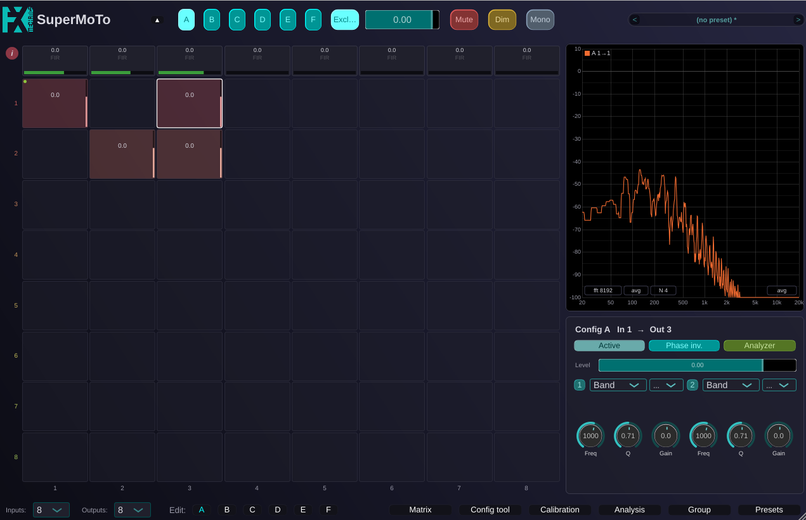

SuperMoTo
SuperMoTo (The Super Monitoring Tool) is an open-source audio plugin (VST3, AU and Standalone) that puts a studio's monitoring signal chain into one plugin instance. It is the big brother of MoTo.

What it does
From a single instance you can:
- Matrix routing: Route up to 32 inputs to 32 outputs (8 by default) through a full matrix, with per-crosspoint gain, 2-band EQ and polarity, and six configurations (A..F) switched or summed from the top bar.
- Output processing: Apply per-output trim, EQ, time-alignment delay and one FIR correction filter (zero-latency WDL convolution), with automatic inter-output latency compensation so speakers with filters of different lengths stay aligned.
- Room measurement: Measure the loudspeakers in the room with built-in stimuli (sweep or band-limited noise): the raw speaker, the corrected one, or the whole system.
- Correction design: Analyse those measurements and design the FIR correction curves (magnitude and phase), including phase-coherent subwoofer integration.
- Group analysis: Align and correct a whole rig at once (several speakers plus a shared subwoofer) in the Group analysis mode.
- Ambisonics decoding: Generate periphonic Ambisonics decoders up to third order, or import a decoding matrix exported by IEM's AllRADecoder.
Documentation
The documentation covers installation, building from source, views and controls, and the measurement and correction workflow:
- SuperMoTo user manual (PDF): The complete manual.
- Quickstart guide (PDF): A quickstart guide for aligning a 2.1 monitoring system.
- Technical paper (PDF): Describes the monitoring chain, the latency budget, the subwoofer phase alignment, and the group alignment math.
Every view in the plugin also has an info button (i) with a summary of controls and shortcuts, along with full tooltips on controls.
License
Free software under the AGPL-3.0-or-later, or commercial terms from the author. The framework-free core parts in FxmeTools remain under the LGPL-3.0-or-later.